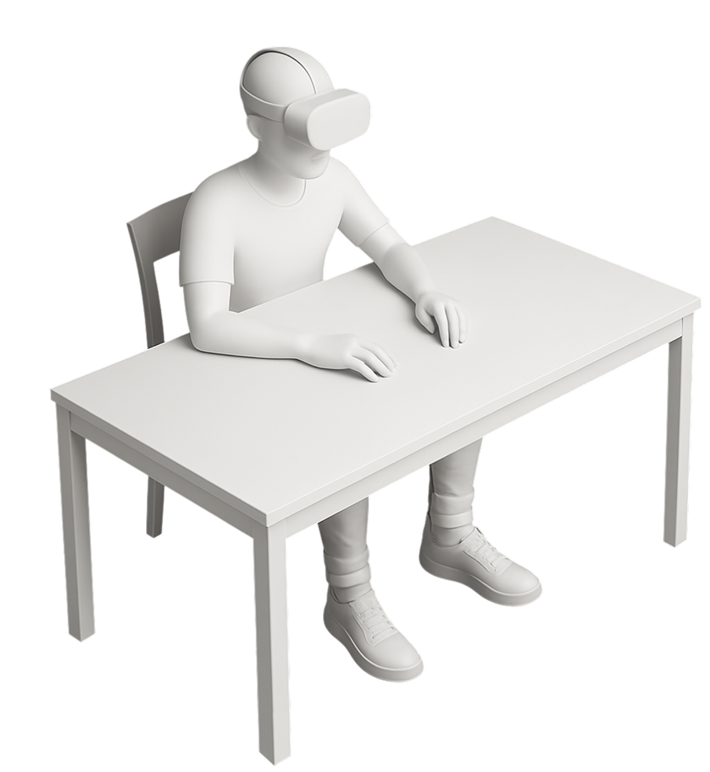
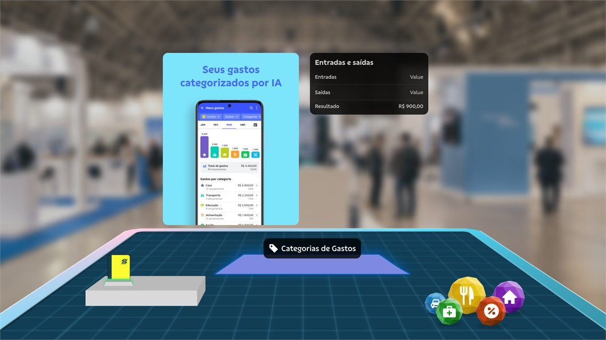
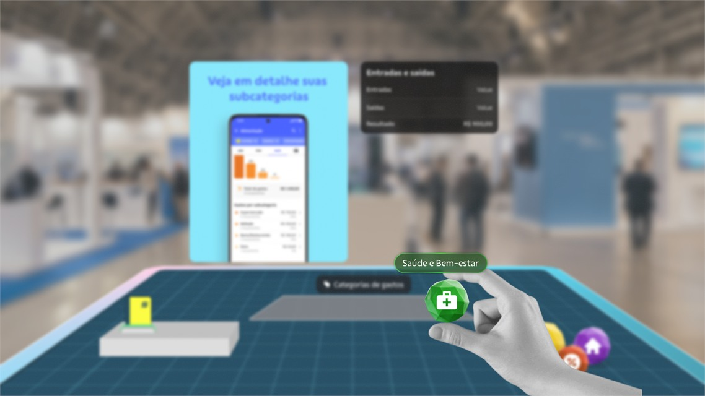
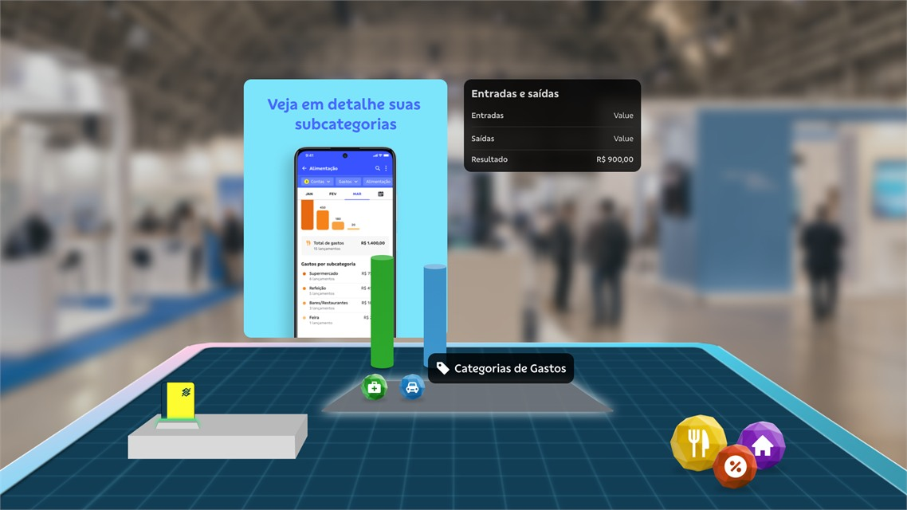
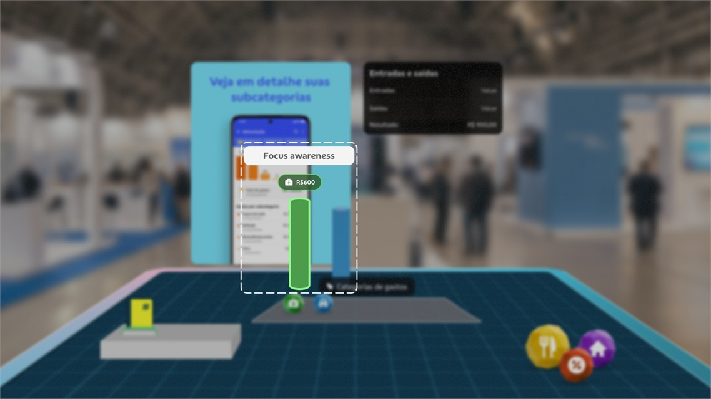
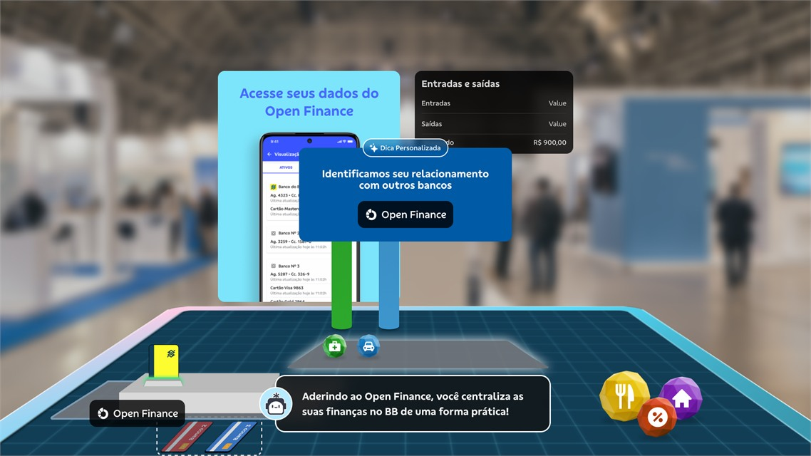
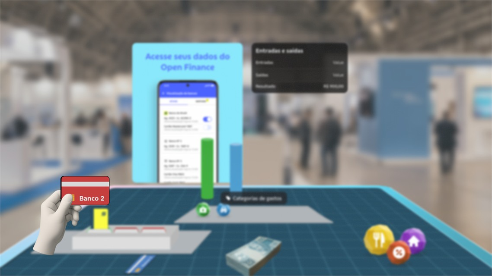
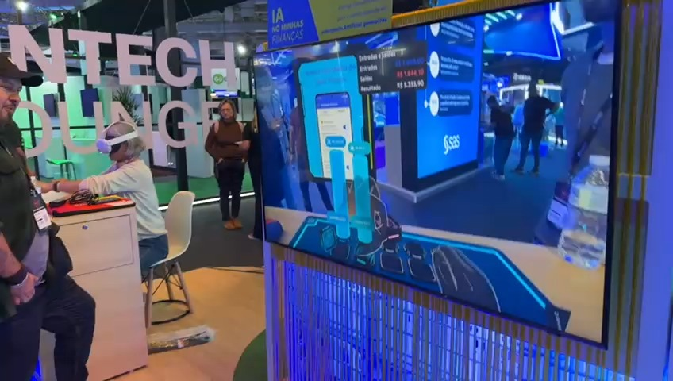

MINHAS
FINANÇAS XR
Experiência de realidade mista criada para o Meta Quest 3 com o objetivo de apresentar e promover a funcionalidade Minhas Finanças do aplicativo BB de forma interativa.



MINHA ATUAÇÃO
-
Colaboração direta com modeladores 3D e desenvolvedores.
-
Elaboração e validação de propostas da experiência por meio de protótipos.
-
Criação de fluxos e simulações para apresentação e validação.
-
Apresentação da proposta aos stakeholders e realização dos ajustes necessários.






VERSÃO APROVADA
PRODUTO FINAL
